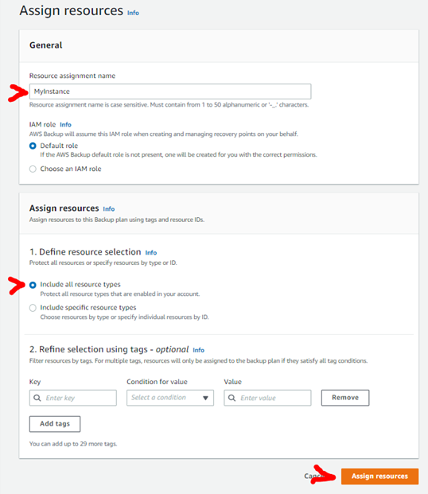
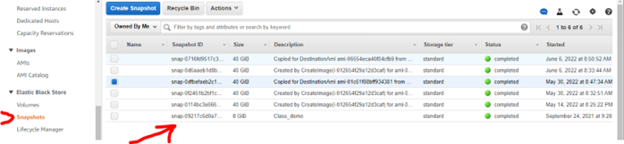

7 June 2022, Chris Bartlett
IMPORTANT: Read all instructions before starting.
For safety, you should set up regular, automated backups of your instance. Backups will add a very small charge to your account, but are rather important.
A few years ago a student ran a command in the wrong location on their instance and managed to remove their ability to do much on their instance. They had to create a new instance. If you have backups of your instance, you can quickly (less than a minute) create a new instance with all your projects, data, etc. from backup.
Technical explanation: The student accidentally changed the ownership of the sudoers file to ubuntu instead of root. This meant that they were unable to use sudo. Therefore, they could not use sudo to restore the correct ownership of the sudoers file. This is known as an own goal…
Go to the AWS Backup service in your AWS control panel. NOTE: This is not part of EC2 – it is a separate service.
Click the “Create Backup plan” button.
On the Create Backup plan > Start options panel, do the following:
To save this backup plan, scroll down and click the “Create Plan” button.
This will take you back to the summary screen for the backup plan. NOTE: your instance has not yet been added to the plan - carry on to the next page here in order to do this…
On the summary screen, click the “Assign resources” button.
Go to the “Assign resources” panel.
See the screenshot below:

The first backup will occur within 24 hours, so you will probably need to wait until tomorrow before checking as follows.
To check that your instance is being backed up, go to the EC2 control panel and under Elastic
Block Store in the left-hand menu, select Snapshots. This is where your backups (“snapshots”)
will be listed. Initially, there will just be one, but each day another will be added. See the
image below.
